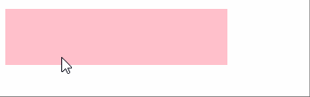
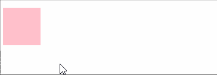

前端实现动画有哪些方式？
参考答案
前端常用的动画实现方式有以下种：
- css3的
transition属性 - css3的
animation属性 - 原生JS动画
- 使用
canvas绘制动画 - SVG动画
- Jquery的
animate函数 - 使用gif图片
1. css3的transition
transition属性：
用来设置样式的属性值是如何从一种状态平滑过渡到另外一种状态
语法：
transition: property duration timing-function delay;transition是一种简写属性,它可以拆分为四个过渡属性。你可以 transition: 值1，值2，值3，值4 这样写，也可以：transition-property: 值1;，transition-duration:值2;，transition-timing-function:值2;，transition-delay:值4;这样写。
| 值 | 描述 |
|---|---|
| -- | -- |
| transition-property | 规定设置过渡效果的 CSS 属性的名称。 |
| transition-duration | 规定完成过渡效果需要多少秒或毫秒。 |
| transition-timing-function | 规定速度效果的速度曲线。 |
| transition-delay | 定义过渡效果何时开始。 |
演示代码：
<div></div>
div{
width:50px;
height: 50px;
background-color: pink;
}
div:hover{
width:200px;
}效果图：
由上图可看出：鼠标移入移出时,width状态的变化是瞬间完成的。
添加transition: 1s;后
div{
width:50px;
height: 50px;
background-color: pink;
transition: 1s;
}
div:hover{
width:200px;
}效果图：

transition: 1s; 设置了width属性状态变化的过渡时间为1秒。
transition属性默认为：transition: all 0 ease 0;
transition:1s; 等价于 transition: all 1s ease 0;
2. css3的animation
animation属性：比较类似于 flash 中的逐帧动画。学习过 flash的同学知道，这种逐帧动画是由关键帧组成，很多个关键帧连续的播放就组成了动画在 CSS3 中是由属性keyframes来完成逐帧动画的。
animation属性与transition属性的区别：
transition只需指定动画的开始和结束状态，整个动画的过程是由特定的函数控制,你不用管它。animation可以对动画过程中的各个关键帧进行设置
演示代码：
<div></div>
div{
width:50px;
height:50px;
background-color: pink;
}
div:hover{
animation: change1 5s;
}
@keyframes change1{
25% {width:130px;background-color: red;}
50% {width:170px;background-color: blue;}
75% {width:210px;background-color: green;}
100% {width:250px;background-color: yellow;}
}
效果图：

3. 原生JS动画
其主要思想是通过setInterval或setTimeout方法的回调函数来持续调用改变某个元素的CSS样式以达到元素样式变化的效果。
javascript 实现动画通常会导致页面频繁性重排重绘，消耗性能，一般应该在桌面端浏览器。在移动端上使用会有明显的卡顿。
<!DOCTYPE html>
<html lang="en">
<head>
<meta charset="UTF-8">
<style type="text/css">
#rect {
width: 200px;
height: 200px;
background: #ccc;
}
</style>
</head>
<body>
<div id="rect"></div>
<script>
let elem = document.getElementById('rect');
let left = 0;
let timer = setInterval(function(){
if(left<window.innerWidth-200){
elem.style.marginLeft = left+'px';
left ++;
}else {
clearInterval(timer);
}
},16);
</script>
</body>
</html>
上面的例子中，我们设置的setInterval时间间隔是16ms。一般认为人眼能辨识的流畅动画为每秒60帧，这里16ms比(1000ms/60)帧略小一些，但是一般可仍为该动画是流畅的。
在很多移动端动画性能优化时，一般使用16ms来进行节流处理连续触发的浏览器事件。例如对touchmove、scroll事件进行节流等。通过这种方式减少持续事件的触发频率，可以大大提升动画的流畅性。
4. 使用canvas绘制动画
canvas作为H5新增元素，是借助Web API来实现动画的。
<!DOCTYPE html>
<html lang="en">
<head>
<meta charset="UTF-8">
<title>Document</title>
<style>
*{
margin:0;
padding:0;
}
</style>
</head>
<body>
<canvas id="canvas" width="700" height="550"></canvas>
<script type="text/javascript">
let canvas = document.getElementById("canvas");
let ctx = canvas.getContext("2d");
let left = 0;
let timer = setInterval(function(){
ctx.clearRect(0,0,700,550);
ctx.beginPath();
ctx.fillStyle = "#ccc";
ctx.fillRect(left,0,100,100);
ctx.stroke();
if(left>700){
clearInterval(timer);
}
left += 1;
},16);
</script>
</body>
</html>注释：通过getContext()获取元素的绘制对象，通过clearRect不断清空画布并在新的位置上使用fillStyle绘制新矩形内容实现页面动画效果。
Canvas主要优势是可以应对页面中多个动画元素渲染较慢的情况，完全通过javascript来渲染控制动画的执行。可用于实现较复杂动画。
5. SVG 动画
SVG是一种基于XML的图像格式，非常类似于HTML的工作方式。它为许多熟悉的几何形状定义了不同的元素，这些元素可以在标记中组合以产生二维图形。
同样高清的质地，矢量图不畏惧放大，体积小。
这里要说明一点就是，因为 SVG 中保存的是点、线、面的信息，与分辨率和图形大小无关，只是跟图像的复杂程度有关，所以图像文件所占的存储空间通常会比 png 小。
SVG动画的优势：
- 优化 SEO 和无障碍的利器，因为 SVG 图像是使用XML(可扩展标记语言【英语：Extensible Markup Language，简称：XML】标记指计算机所能理解的信息符号，通过此种标记，计算机之间可以处理包含各种信息的文章等)来标记构建的，浏览器通过绘制每个点和线来打印它们，而不是用预定义的像素填充某些空间。这确保 SVG 图像可以适应不同的屏幕大小和分辨率。
- 由于是在 XML 中定义的，SVG 图像比 JPG 或 PNG 图像更灵活，而且我们可以使用 CSS 和 JavaScript 与它们进行交互。SVG 图像设置可以包含 CSS 和 JavaScript。在 react、vue 这种数据驱动视图的框架下，对于 SVG 操作就更加如鱼得水了。（下文会跟大家分享一些小的 SVG 动画在我们项目中的实践）
- 在运用层面上，SVG 提供了一些图像编辑效果，比如屏蔽和剪裁、应用过滤器等等。并且 SVG 只是文本，因此可以使用 GZip 对其进行有效压缩。
6. Jquery的animate()方法
animate()方法执行CSS属性集的自定义动画。- 该方法通过 CSS 样式将元素从一个状态改变为另一个状态。
- CSS属性值是逐渐改变的，这样就可以创建动画效果。
- 只有数字值可创建动画（比如 "
margin:30px"）。字符串值无法创建动画（比如 "background-color:red"）。
代码演示：
<button id="btn1">使用动画放大高度</button>
<button id="btn2">重置高度</button>
<div id="box" style="background:#98bf21;height:100px;width:100px;margin:6px;">
</div>
$(document).ready(function(){
$("#btn1").click(function(){
$("#box").animate({height:"300px"});
});
$("#btn2").click(function(){
$("#box").animate({height:"100px"});
});
});
效果图：
7. 使用gif图片
gif图想必大家都接触过，前端使用也非常简单。
总结：
- 代码复杂度方面简单动画：
css代码实现会简单一些，js复杂一些。 复杂动画的话：css代码就会变得冗长，js实现起来更优。 - 动画运行时，对动画的控制程度上
js比较灵活，能控制动画暂停，取消，终止等css动画不能添加事件，只能设置固定节点进行什么样的过渡动画。 - 兼容方面
css有浏览器兼容问题js大多情况下是没有的。 - 性能方面
css动画相对于优一些，css动画通过GUI解析js动画需要经过js引擎代码解析，然后再进行GUI解析渲染。
前端开发中，实现动画的方法多种多样，每种方法都有其适用场景和优缺点。以下是一些常见的实现方式：
- CSS 动画：
- 使用
@keyframes和animation属性定义动画。 - 优点：易于实现，性能好，易于维护。
- 缺点：功能相对简单，难以实现复杂的交互动画。
- CSS 过渡（Transitions）：
- 使用
transition属性在状态变化时实现平滑过渡。 - 优点：简单易用，性能优秀。
- 缺点：只能用于状态变化的过渡，不适合复杂动画。
- JavaScript 动画：
- 使用 JavaScript 直接操作 DOM 元素的样式属性实现动画。
- 优点：灵活性高，可以控制动画的每一个细节。
- 缺点：可能影响性能，需要更多的代码实现。
- Web Animations API：
- 使用
Element.animate()方法实现动画。 - 优点：提供更丰富的动画控制和更一致的跨浏览器支持。
- 缺点：兼容性不如 CSS 动画。
- SVG 动画：
- 使用 SVG 元素和 SMIL（Synchronized Multimedia Integration Language）或 CSS 动画实现动画。
- 优点：适合矢量图形动画，易于集成。
- 缺点：浏览器支持和性能可能不如 CSS 动画。
- Canvas：
- 使用 HTML
<canvas>元素和 JavaScript 绘制动画。 - 优点：适合复杂的图形和游戏动画。
- 缺点：实现复杂，需要手动管理每一帧的绘制。
- CSS 3D 变换：
- 使用
transform属性的 3D 变换实现动画效果。 - 优点：可以触发硬件加速，提升性能。
- 缺点：兼容性和浏览器支持有限。
- 请求动画帧（requestAnimationFrame）：
- 使用
requestAnimationFrame方法实现平滑的动画。 - 优点：性能好，适合复杂的动画和游戏。
- 缺点：实现相对复杂，需要手动控制每一帧。
- CSS Grid 和 Flexbox：
- 利用 CSS Grid 和 Flexbox 的布局特性实现动画效果。
- 优点：易于实现，兼容性好。
- 缺点：主要用于布局动画，不适合复杂的动画效果。
考察重点
- 理解：不同动画实现方式的特点和适用场景。
- 选择：根据项目需求和目标选择合适的动画实现方式。